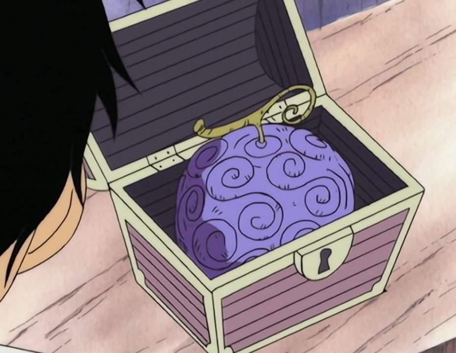
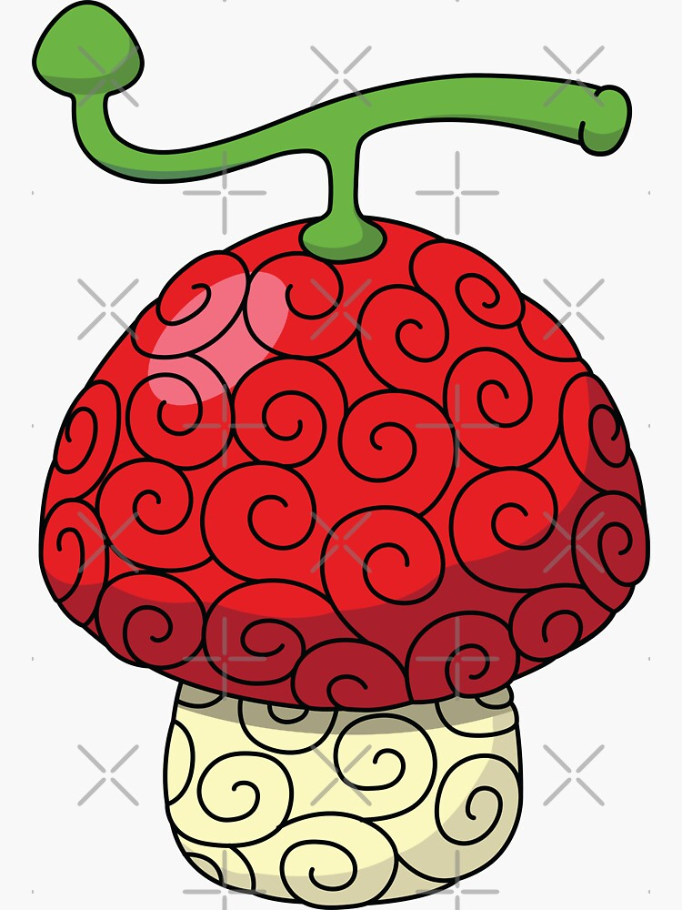
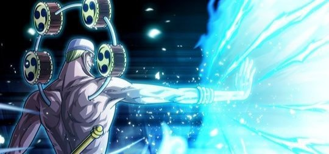

Akuma no Mi é um termo em japonês que se traduz para "Fruta do Diabo" em português. Este termo refere-se a um elemento central no mundo do anime e manga One Piece, criado por Eiichiro Oda. Neste universo fictício, as Akuma no Mi são frutas místicas e raras que concedem poderes sobrenaturais a quem as consome, mas também os tornam incapazes de nadar (um sério problema num mundo onde a água é abundante). Existem três tipos principais de Akuma no Mi:
As Akuma no Mi são altamente cobiçadas no mundo de One Piece e são uma parte importante da história, com muitos personagens principais e vilões obtendo seus poderes através delas. No entanto, a busca por essas frutas também pode ser perigosa, já que aqueles que as consomem se tornam alvos de caçadores de recompensas e da Marinha Mundial.
1- Paramecia: Estas frutas concedem habilidades especiais que variam amplamente, desde a capacidade de esticar o corpo como borracha até a habilidade de controlar fogo ou transformar objetos em pedra.

- A Gomu Gomu no Mi é uma fruta que concede ao usuário a capacidade de se esticar como borracha, tornando seu corpo elástico e permitindo que ele realize ataques poderosos.
2- Zoan: As frutas Zoan permitem que o consumidor se transforme em um animal ou uma forma híbrida entre humano e animal. Isso pode incluir animais reais, mitológicos ou mesmo extintos.

- A Hito Hito no Mi, também conhecida como a "Fruta do Humano", é uma Akuma no Mi do tipo Zoan que permite ao usuário se transformar em um ser humano. Tony Tony Chopper é uma rena que consumiu esta fruta, adquirindo a capacidade de assumir uma forma humana, mantendo suas características de rena. Isso inclui falar, andar em duas pernas e interagir com humanos.
3- Zoan Mística As Zoas Místicas são um tipo especial de Akuma no Mi que permitem aos consumidores se transformar em criaturas míticas ou lendárias, ao invés de animais comuns. Cada Zoa Mística concede habilidades únicas relacionadas à criatura mítica que representa.

- O Modelo: Fênix é uma Zoan Mística que concede ao usuário a habilidade de se transformar em uma fênix, uma criatura lendária associada à regeneração e ao fogo. Marco, o Fenômeno, é um pirata que possui essa Akuma no Mi e pode regenerar ferimentos rapidamente, além de usar o fogo em seus ataques. Sua resistência e habilidades de cura são impressionantes, tornando-o um adversário formidável.(não tem aparição da fruta)
4- Logia: As frutas Logia concedem ao consumidor a capacidade de criar, controlar e transformar-se em um elemento natural, como fogo, gelo ou fumaça. Elas são consideradas as mais poderosas das Akuma no Mi.

- A Goro Goro no Mi, também conhecida como a "Fruta do Trovão", é uma Akuma no Mi do tipo Logia que concede ao usuário a capacidade de criar, controlar e se transformar em eletricidade. Enel, um dos vilões da saga Skypiea, é o usuário desta fruta. Ele pode gerar raios poderosos, mover-se à velocidade da luz na forma de eletricidade e controlar máquinas e objetos elétricos.(não tem aparição da fruta)